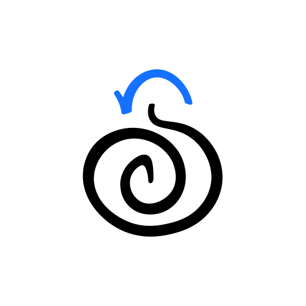
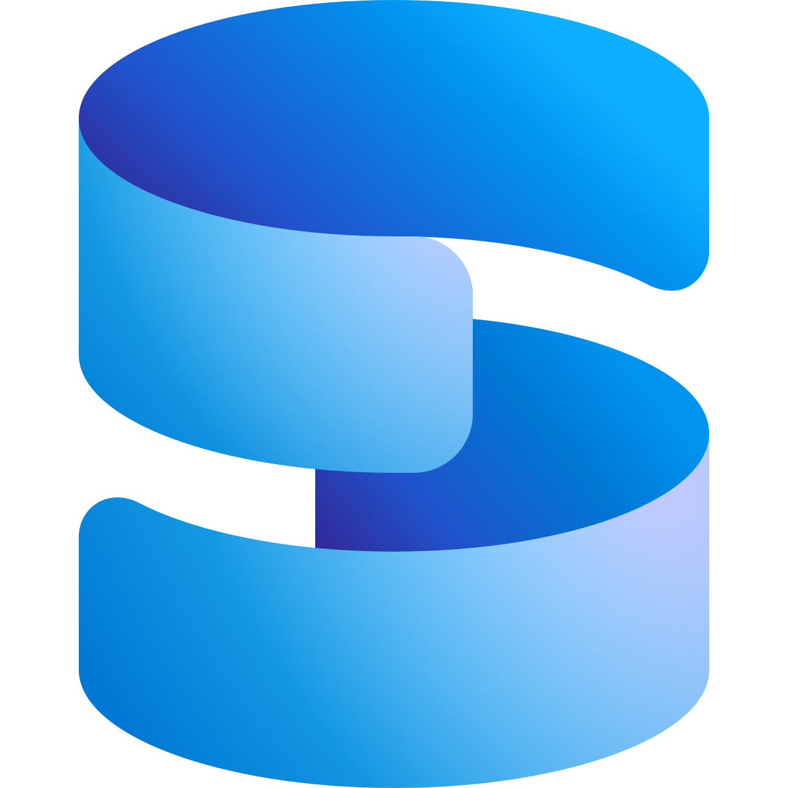
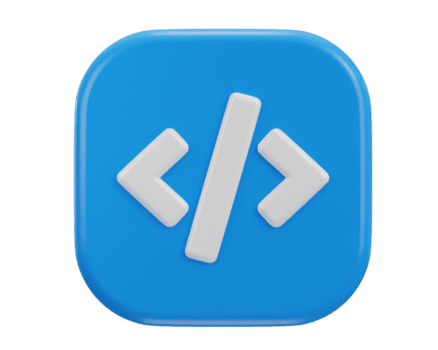

IT-süsteemide nooremspetsialist, tase 4
Markus Gaidalenko
Meeldib teada mis päriselt toimub.
Uurin pidevalt uusi võimalusi ning lahendusi, tüürin alati paremuse poole. Pole süsteemi, mis mind ei huvita. Kõige tugevamalt õpitud valdkonnad on serverid ja võrk. Pole väljakutset, mis oleks liiga suur mulle. Enim huvitab mind küberturvalisus.
// kliki tööriistale et näha rohkem

Koostasin ja kaitsesin edukalt lõputööd Security Onion teemal. Täielikult passiivne võrgumonitooringu ja ohutuvastuse lahendus.
Palju kasutatud hüpverviisor. Nii koolis, kui ka isiklikes projektides. Olen sellega üsna tuttav. Ei ole ka võõras Microsofti Hyper-V tarkvarale.
Pean end üsna algajaks kuid egas see miskit keerulist pole. Olen koolis projektide jaoks kasutanud CI/CD praktikat.

Võrkudest ulatuslikult õppinud mitmeid aastaid. Seda nii seadistades, kui ka selle monitoorimises. Võrguturvalisus on üks mu suurematest huvidest.
Tean enda kätt ümber M365 toodete.
Enamvähem kursis skriptimisega nii Bashis, kui ka PowerShellis. Olen mõlemat kasutanud ka isiklike projektide jaoks.

Olen kokkupuutunud erinevate andmebaaside tarkvaraga. Ei ole mitte mingil juhul professionaal, kuid saan hakkama.
Igapäevased töökeskkonnad. Tunnen end mugavalt mõlemas operatsioonisüsteemis.
Olen kord või kaks kasutanud Zabbixit monitoorimiseks. Ei ole professionaal, kuid piisavalt tuttav.
Õppimise ajal lõin paar väiksemat projekti kasutades Sambat.
Õppimise ajal lõin paar väiksemat projekti kasutades TrueNASi.

Ei ole küll veebiarendaja, kuid saan enamvähem hakkama.